Columns show normalized τ = 0, 0.5, 1; actual time is scaled by T_end. Rows include every algorithm scheduled by the immutable run plan.
| Algorithm / run status | Start (τ=0) | Midpoint (τ=0.5) | End (τ=1) |
|---|---|---|---|
| branch-and-bound run: run_20261012T041942Z__branch-and-bound__minmaxsum__berlin52-3939d9e3cc19-6ce5d7089a__r00__74c0c7ac230c COMPLETED; feasible=True; verified=True (CERTIFIED_CONTINUOUS); optimality=FEASIBLE | 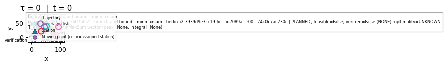 | 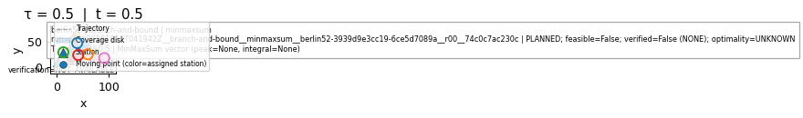 | 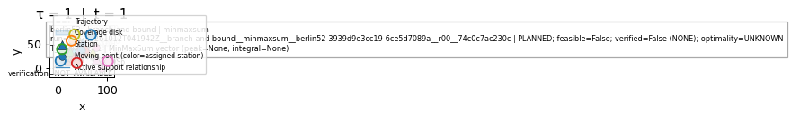 |
| brute-force run: run_20261012T042845Z__brute-force__minmaxsum__berlin52-3939d9e3cc19-6ce5d7089a__r00__327992105abd FAILED; feasible=False; verified=False (NONE); optimality=FAILED | FAILED; feasible=False; verified=False (NONE); optimality=FAILED NO_SOLUTION_ARTIFACT | FAILED; feasible=False; verified=False (NONE); optimality=FAILED NO_SOLUTION_ARTIFACT | FAILED; feasible=False; verified=False (NONE); optimality=FAILED NO_SOLUTION_ARTIFACT |
| genetic run: run_20261012T041942Z__genetic__minmaxsum__berlin52-3939d9e3cc19-6ce5d7089a__r00__50e80f72dc3d COMPLETED; feasible=True; verified=True (CERTIFIED_CONTINUOUS); optimality=FEASIBLE | 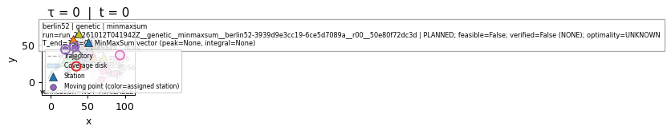 | 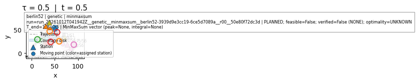 | 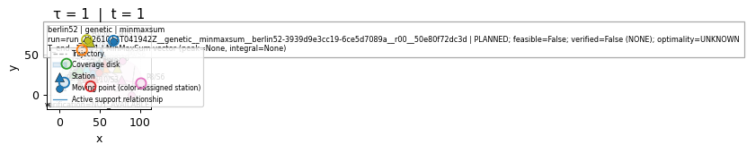 |
| greedy run: run_20261012T041942Z__greedy__minmaxsum__berlin52-3939d9e3cc19-6ce5d7089a__r00__4be0a64bccbf COMPLETED; feasible=True; verified=True (CERTIFIED_CONTINUOUS); optimality=FEASIBLE | 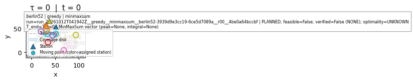 | 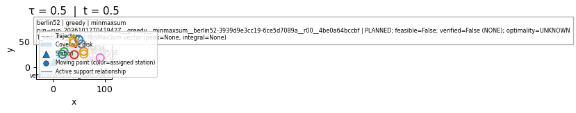 | 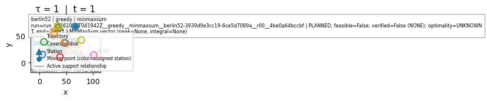 |
| ip-kont run: run_20261012T042845Z__ip-kont__minmaxsum__berlin52-3939d9e3cc19-6ce5d7089a__r00__1d735640dadf SKIPPED; feasible=False; verified=False (NONE); optimality=UNKNOWN | SKIPPED; feasible=False; verified=False (NONE); optimality=UNKNOWN NO_SOLUTION_ARTIFACT | SKIPPED; feasible=False; verified=False (NONE); optimality=UNKNOWN NO_SOLUTION_ARTIFACT | SKIPPED; feasible=False; verified=False (NONE); optimality=UNKNOWN NO_SOLUTION_ARTIFACT |
| local-search run: run_20261012T041942Z__local-search__minmaxsum__berlin52-3939d9e3cc19-6ce5d7089a__r00__5147d7624289 COMPLETED; feasible=True; verified=True (CERTIFIED_CONTINUOUS); optimality=FEASIBLE | 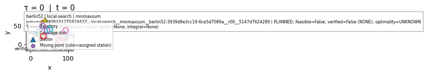 | 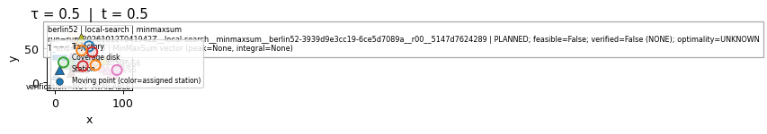 | 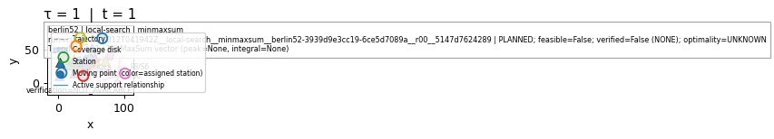 |
| lp-rounding run: run_20261012T041942Z__lp-rounding__minmaxsum__berlin52-3939d9e3cc19-6ce5d7089a__r00__e90ee9cb14fd COMPLETED; feasible=True; verified=True (CERTIFIED_CONTINUOUS); optimality=FEASIBLE | 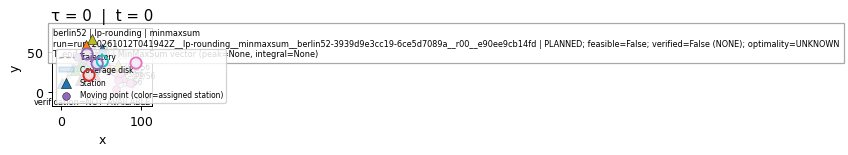 | 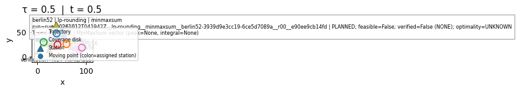 | 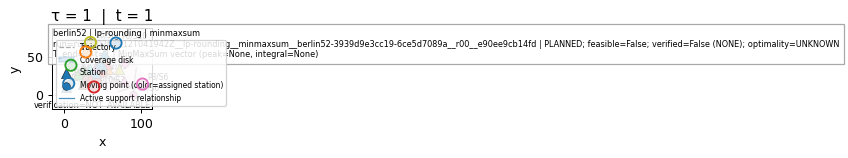 |
| nn run: run_20261012T041942Z__nn__minmaxsum__berlin52-3939d9e3cc19-6ce5d7089a__r00__3999c0c83d37 COMPLETED; feasible=True; verified=True (CERTIFIED_CONTINUOUS); optimality=FEASIBLE | 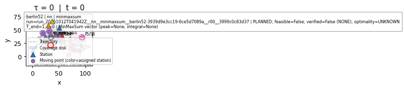 | 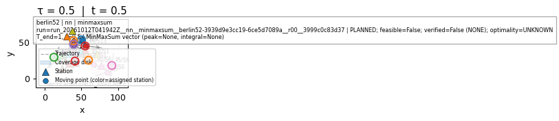 | 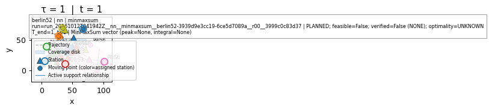 |
| primal-dual run: run_20261012T041942Z__primal-dual__minmaxsum__berlin52-3939d9e3cc19-6ce5d7089a__r00__abdd1705c36d COMPLETED; feasible=True; verified=True (CERTIFIED_CONTINUOUS); optimality=FEASIBLE | 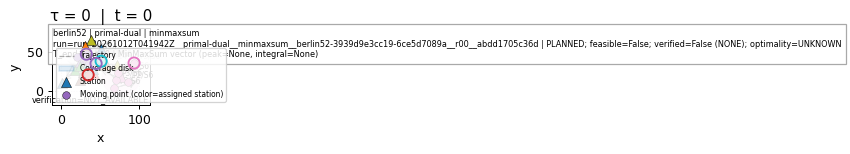 | 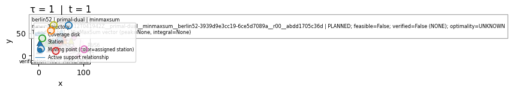 | |
| sa run: run_20261012T041942Z__sa__minmaxsum__berlin52-3939d9e3cc19-6ce5d7089a__r00__b6baa6cac112 COMPLETED; feasible=True; verified=True (CERTIFIED_CONTINUOUS); optimality=FEASIBLE | 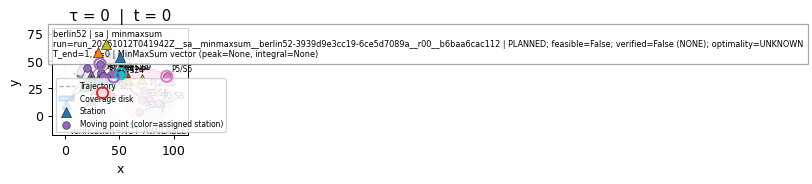 | 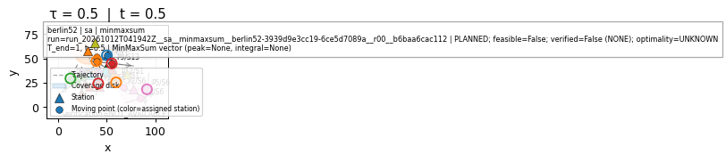 | 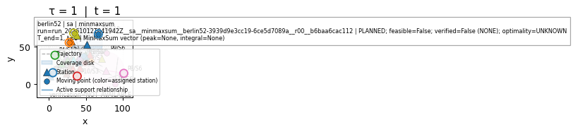 |
| shifting run: run_20261012T041942Z__shifting__minmaxsum__berlin52-3939d9e3cc19-6ce5d7089a__r00__f79cc77eee19 COMPLETED; feasible=True; verified=True (CERTIFIED_CONTINUOUS); optimality=FEASIBLE | 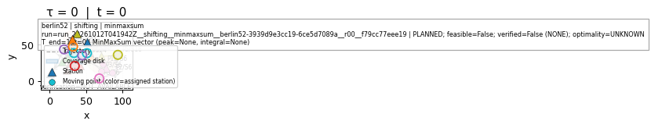 | 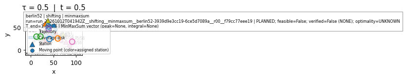 | 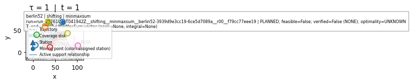 |